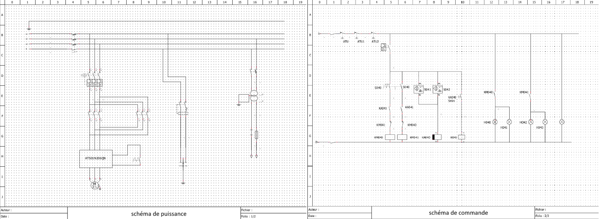
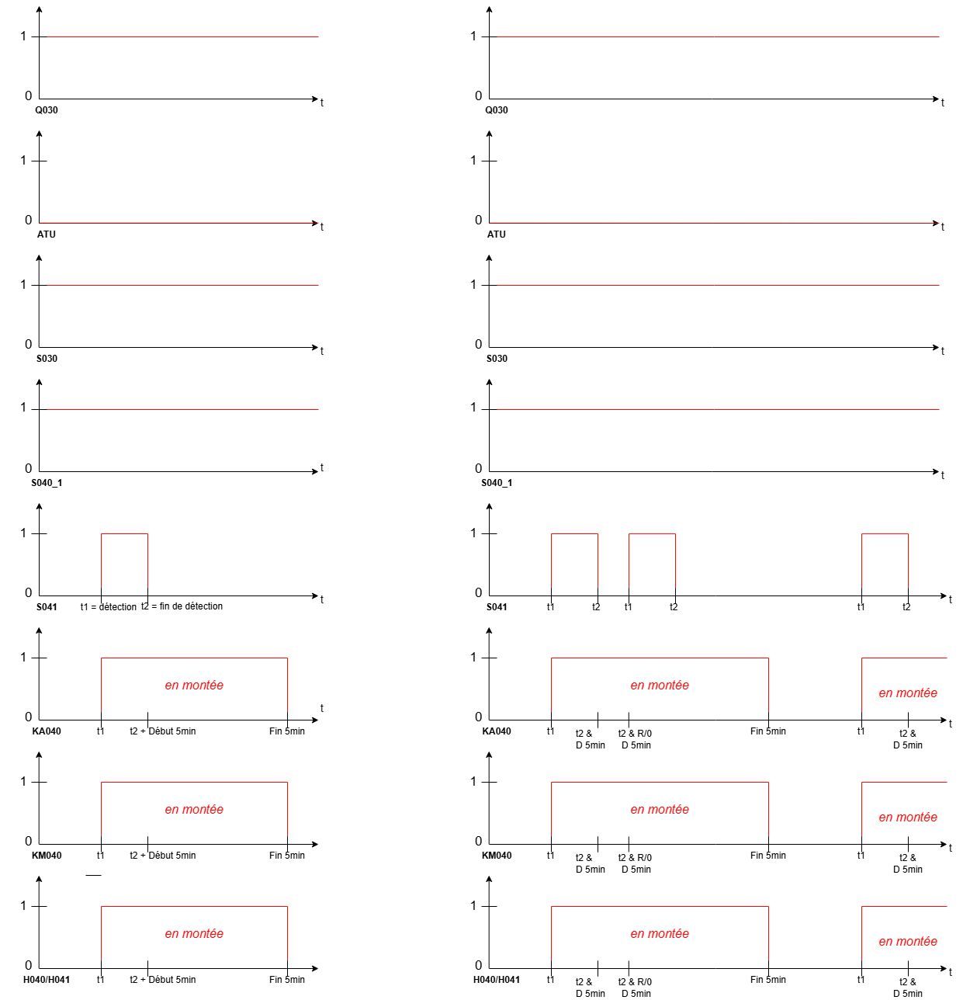

Ce projet de deuxième année de BUT GEII, réalisé en binôme, avait pour but la modernisation complète de la commande d'un escalier mécanique industriel. L'objectif était de remplacer une logique traditionnelle à relais (câblée) par une intelligence programmée sur automate, afin d'optimiser la consommation énergétique, de faciliter le dépannage et d'offrir une flexibilité de configuration impossible auparavant.
Contexte et Cahier des Charges
L'enjeu principal était de concevoir un système réversible (montée/descente sélectionnable) et économe en énergie. L'escalier ne devait fonctionner que sur détection d'un usager, avec un maintien de 5 minutes (300s).
Le point critique du cahier des charges résidait dans la fonction "Redéclenchable" : si un nouvel usager emprunte l'escalier pendant le décompte, la minuterie doit se réinitialiser instantanément sans jamais arrêter le moteur, assurant une fluidité parfaite du trafic. La sécurité était assurée par une gestion prioritaire des arrêts d'urgence.
Démarche de Conception : Du Schéma aux Équations
1. Analyse Électrique (QElectroTech)
Nous avons d'abord modélisé l'architecture matérielle. Le schéma de puissance intègre un démarreur progressif (LH4N) pour la mécanique et des contacteurs inverseurs (KM040/KM041). Le schéma de commande isole la chaîne de sécurité.
2. Logique Séquentielle (GRAFCET)
Le cœur du système repose sur un GRAFCET structuré avec une divergence en OU pour gérer les modes exclusifs (Montée vs Descente vs Arrêt). Pour gérer la contrainte du timer redéclenchable, nous avons imaginé une boucle spécifique :
- L'étape 5 (Comptage) maintient le moteur allumé.
- Si une nouvelle détection survient (front descendant des capteurs), le système saute à l'étape 7 (Reset).
- Cette étape remet la variable de temps à 0 et renvoie immédiatement le système en comptage, créant une boucle infinie tant qu'il y a du passage.
3. Validation Temporelle (Chronogrammes)
Avant de passer au codage, nous avons validé le comportement du système, notamment la fonction critique de redéclenchement. Les chronogrammes ci-dessous montrent comment le signal Timer est "tué" (Reset) à chaque nouveau passage (t1, t2...), prolongeant la marche moteur indéfiniment.
4. Traduction en Équations Logiques
Pour implémenter ce système sur l'interface IHM GP Pro EX et gagner en flexibilité (façon langage C/Python), nous avons choisi de ne pas utiliser le langage SFC graphique, mais de traduire notre GRAFCET en équations booléennes basées sur l'auto-maintien (Set/Reset).
Exemple d'équation pour l'étape de montée (X2) :
X2 = (X2 * !X5) + (X1 * S040_1 * S041)
(Je reste actif tant que l'étape suivante X5 n'est pas active, OU je m'active si je viens de l'étape précédente X1 avec les bonnes conditions).
Défis Techniques et Bilan
La complexité majeure a résidé dans l'implémentation de la temporisation. Sur le logiciel de simulation M3 Soft, les blocs "Timer" standards étaient trop rigides pour notre logique de boucle de reset instantanée. Nous avons dû simplifier le modèle pour la simulation.
Pour l'implémentation finale sur GP Pro, nous avons tenté de recréer un comportement de timer similaire à la programmation informatique (incrémentation de variable), piloté par nos équations. Bien que la logique théorique (validée par chronogrammes) et les équations de sécurité (forçage à 0 par équations OU) soient correctes, nous avons manqué de temps pour déboguer totalement le cycle de réinitialisation sur l'automate réel.
Ce projet m'a permis de comprendre en profondeur la structure interne d'un programme d'automate, en "cassant" la abstraction graphique du GRAFCET pour manipuler la logique combinatoire brute qui le compose.
Compétences Techniques
| Compétence | Détail de la compétence | Niveau d’acquisition |
|---|---|---|
| Automatisme (GRAFCET) | Conception de structures complexes (divergences, reprises de séquence) et validation par chronogrammes. | |
| Logique Combinatoire | Traduction de diagrammes séquentiels en équations booléennes (Maintien prioritaire). | |
| Schématique Électrique | Réalisation de schémas de puissance et de commande normés sous QElectroTech. | |
| Programmation API | Utilisation d'environnements de développement (M3 Soft, GP Pro) pour l'implémentation logique. |
🤝 Soft Skills (Compétences Comportementales)
| Compétence | Mise en application |
|---|---|
| Esprit d'Analyse | Déconstruction d'un système séquentiel (GRAFCET) pour le traduire en équations logiques pures. |
| Rigueur et Sécurité | Gestion des priorités d'arrêt et de la hiérarchie des modes de fonctionnement (GEMMA). |
| Travail en Binôme | Coordination efficace pour lier la partie conception électrique et la partie programmation. |